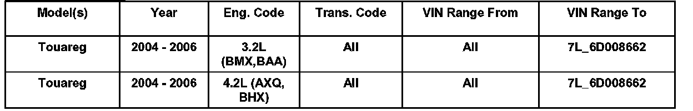
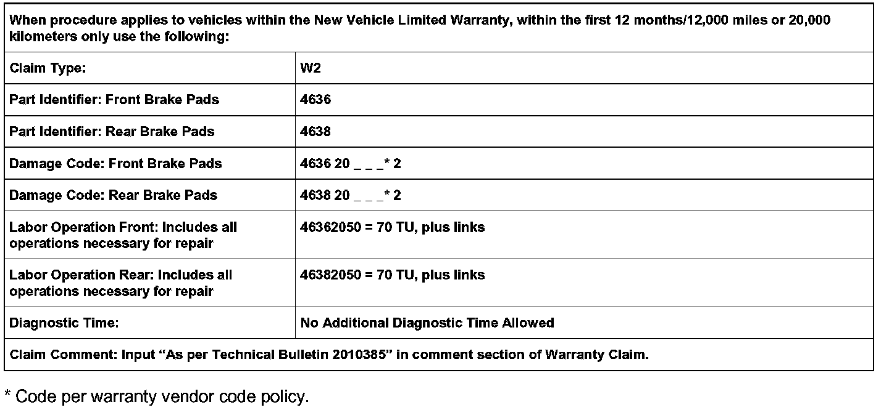
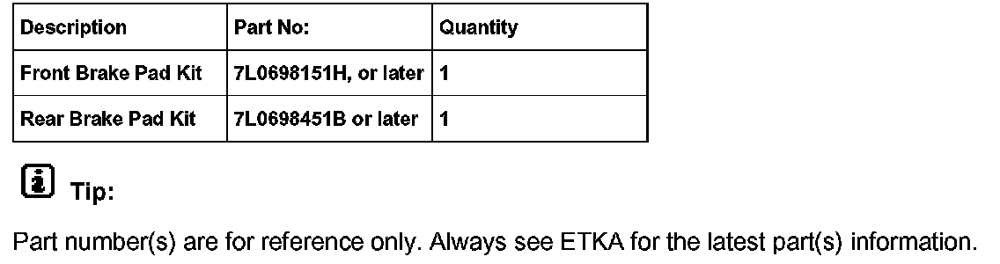

Brakes - Intermittent Front/Rear Brake Squealing
46 06 01August 11, 2006
2010385
46 06 01 Aug. 11 2006 2010385, Supersedes TB Group 46 number 05 03 dated October 15, 2005 due to updated information.
Condition
Front or Rear Disc Brakes, Replacing Brake Pads for Intermittent Squeal
Customer concerns for brake squeal can be serviced by installing improved brake pads.

Vehicles Affected
Technical Background
Brake pad composition may in time result in intermittent squeal from front or rear brakes.
Tip:
Condition DOES NOT affect brake performance.
Production Solution
Updated brake pad composition introduced as of 7L_6D008663.
Service
Note:
For model year 2006 prior to VIN: 7L_6D008663, improved front and rear brake pads MUST be installed at PDI or when vehicle returns for maintenance.
This procedure should be applied as follows:
^ On 2006 model year Touareg prior to VIN: 7L6D008663.
^ Only on vehicles with the above listed engine configurations.
^ Only on vehicles with Volkswagen of America, Inc. original equipment brake pads and currently within the new vehicle warranty (see Warranty Table for additional criteria).
^ Model year 2004 and 2005 Touareg, meeting the bulletin criteria, determine which axle the sound is coming from and install updated pads to that axle.
Procedure
Replace front brake pads using brake pad kit Part No.: 7L0 698 151H, or later and / or rear brake pads Part No.: 7L0 698 451B or later, see Repair Manual, Group 46 Brakes Mechanical.
Tip:
DO NOT replace brake rotors as they will not be affected by the exchange.
If customer has had a recent brake pad replacement, with original equipment pads and noise concern still exists, determine which axle and install updated pads to that axle.

Warranty

Required Parts and Tools